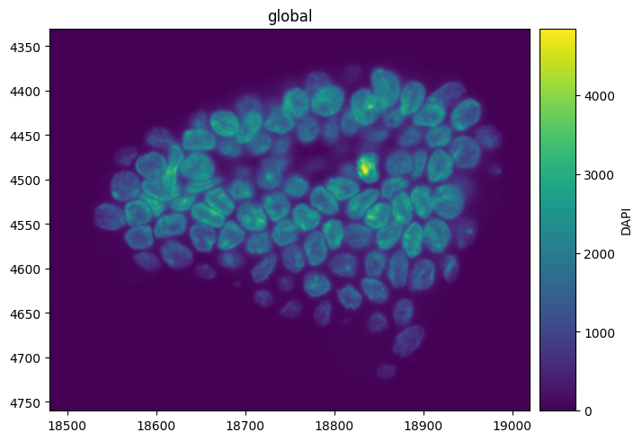
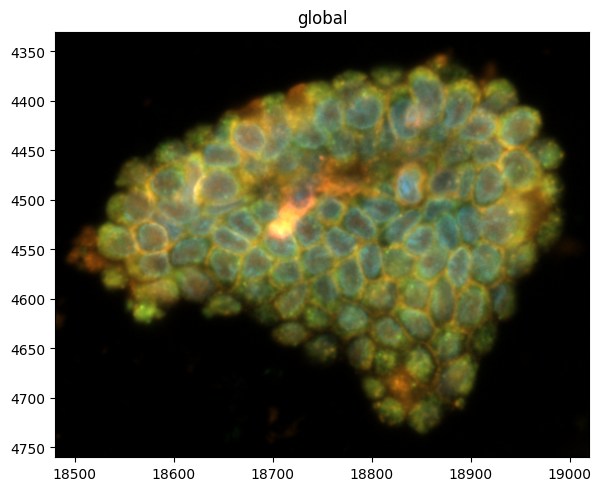
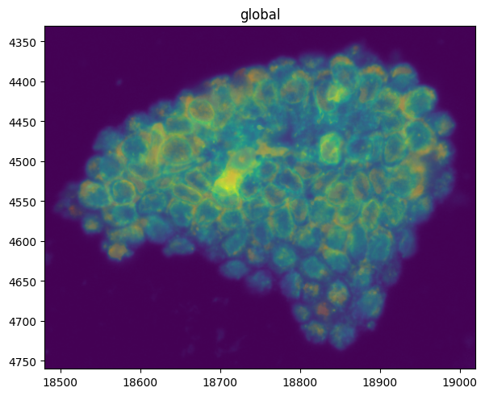
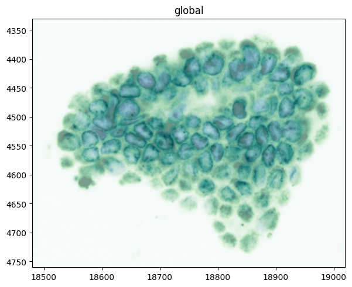
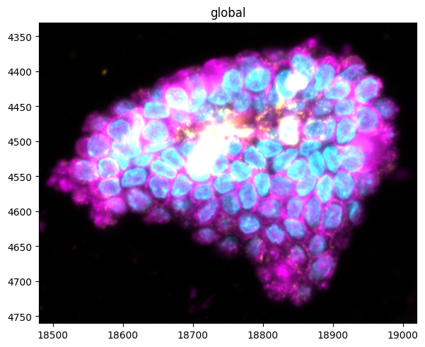
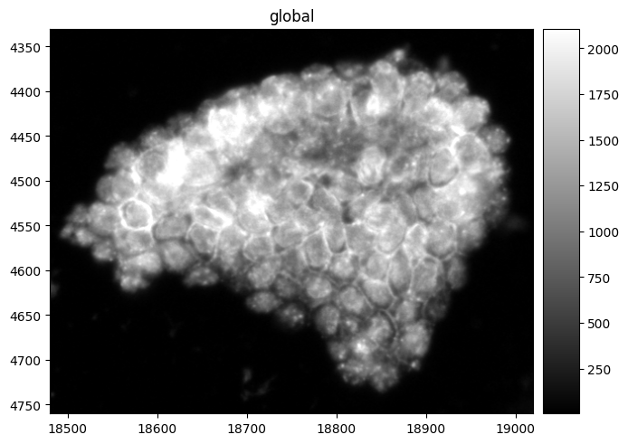
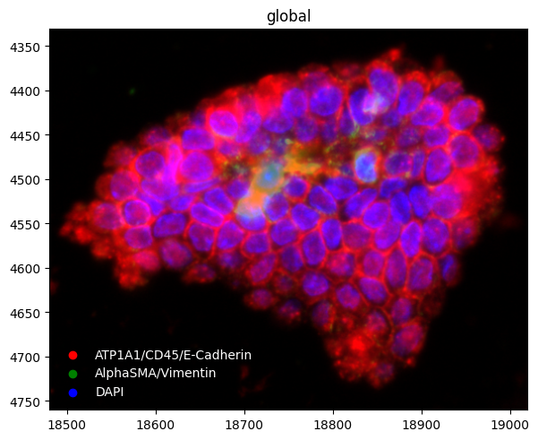

Multichannel and fluorescence images in spatialdata-plot#
A fluorescence or multiplexed-imaging experiment (Xenium morphology, CODEX, IMC, CyCIF) produces an
image with several channels — one per stain or marker — rather than a single RGB photo.
render_images renders these directly, and gives you per-channel control over which channels to show,
what colour each gets, and how each is contrasted. By the end you should be able to:
Inspect an image’s named channels and render a single one by name.
Composite several channels at once and give each its own colour with
palette(a lookup table, or LUT).Fix the dim, heavy-tailed look of raw fluorescence with per-channel contrast.
Use
grayscaleandchannels_as_legendto finish a publication-ready panel.
We use the Xenium cells dataset from squidpy (morphology_focus is a real four-channel
fluorescence image), downloaded and cached on first use.
Setup#
import squidpy as sq
import spatialdata_plot # noqa: F401 # registers the .pl accessor
from spatialdata_plot import PercentileNormalize
sdata = sq.datasets.cells()
sdata
INFO Loading existing dataset from data/spatialdata/cells.zarr
SpatialData object, with associated Zarr store: /Users/tim.treis/Documents/GitHub/spatialdata-plot-notebooks/tutorials/data/spatialdata/cells.zarr
├── Images
│ ├── 'he_aligned': DataTree[cyx] (3, 430, 540), (3, 215, 270)
│ ├── 'he_image': DataTree[cyx] (3, 423, 339), (3, 211, 169)
│ └── 'morphology_focus': DataTree[cyx] (4, 430, 540), (4, 215, 270)
├── Labels
│ ├── 'cell_labels': DataTree[yx] (430, 540), (215, 270)
│ ├── 'nucleus_labels': DataTree[yx] (430, 540), (215, 270)
│ └── 'tissue_labels': DataTree[yx] (430, 540), (215, 270)
├── Points
│ └── 'transcripts': DataFrame with shape: (<Delayed>, 13) (3D points)
├── Shapes
│ ├── 'cell_boundaries': GeoDataFrame shape: (94, 1) (2D shapes)
│ └── 'nucleus_boundaries': GeoDataFrame shape: (94, 2) (2D shapes)
└── Tables
└── 'table': AnnData (94, 5101)
with coordinate systems:
▸ 'global', with elements:
he_aligned (Images), he_image (Images), morphology_focus (Images), cell_labels (Labels), nucleus_labels (Labels), tissue_labels (Labels), transcripts (Points), cell_boundaries (Shapes), nucleus_boundaries (Shapes)
1. Inspect the channels#
A multichannel image carries a named channel axis. Here are the four markers of the Xenium
morphology_focus image.
image = sdata.images["morphology_focus"]
# multiscale images are a datatree; read the channel names off the full-resolution level
full_res = image["scale0"].image if hasattr(image, "keys") else image
channels = [str(c) for c in full_res.coords["c"].values]
channels
['DAPI', 'ATP1A1/CD45/E-Cadherin', '18S', 'AlphaSMA/Vimentin']
2. A single channel — channel=#
Pass a channel name to render just that marker — channels are selected by name. (An integer
works only when the channel axis is itself integer-named, as in the synthetic blobs image; the
named markers here must be selected by name.) DAPI stains nuclei.
sdata.pl.render_images("morphology_focus", channel="DAPI").pl.show()

3. The default composite#
With no channel, all channels are composited into one image, each assigned a colour automatically.
This already shows the tissue structure.
sdata.pl.render_images("morphology_focus").pl.show()

4. Per-channel contrast — the fluorescence essential#
Raw fluorescence is heavy-tailed: a few bright pixels stretch the range and crush everything else
toward black. Pass a list of norms — one per channel — to set contrast independently.
PercentileNormalize clips to data percentiles, which is exactly what viewers like Xenium Explorer do.
See the Normalization and contrast tutorial for norms in depth.
norms = [PercentileNormalize(1, 99)] * len(channels)
sdata.pl.render_images("morphology_focus", norm=norms).pl.show()

5. Recolouring channels — cmap vs palette#
You can hand each channel its own colourmap with a list of cmaps. For fluorescence this emits a
warning: colourmaps run to white, so overlapping channels wash each other out. For additive
compositing, prefer palette (next section).
Mechanically, a cmap list averages the channels (dividing by their count), which dims the
result, whereas palette adds them — the source of the cleaner composite in the next section.
sdata.pl.render_images(
"morphology_focus",
channel=["DAPI", "18S"],
cmap=["Blues", "Greens"],
norm=[PercentileNormalize(1, 99)] * 2,
).pl.show()
WARNING render_images: You're blending multiple cmaps. If the plot doesn't look like you expect, it might be
because your cmaps go from a given color to 'white', and not to 'transparent'. Therefore, the 'white' of
higher layers will overlay the lower layers. Consider using 'palette' instead.

6. Fluorescence LUTs — per-channel palette#
palette assigns each channel a single colour that fades to black, and the channels are then added
together, so they combine cleanly — the lookup-table (LUT) model used in microscopy. Assign a colour per marker to build a
readable composite.
sdata.pl.render_images(
"morphology_focus",
channel=["DAPI", "ATP1A1/CD45/E-Cadherin", "AlphaSMA/Vimentin"],
palette=["cyan", "magenta", "yellow"],
norm=[PercentileNormalize(1, 99)] * 3,
).pl.show()

7. A desaturated view — grayscale#
grayscale=True collapses a three-channel selection into a single grayscale intensity — useful
for a structural, colour-free view. It requires exactly three channels, and takes a single norm
(broadcast across them) rather than a per-channel list.
The three channels are mapped to red, green and blue and combined with the standard luminance weights (Rec. 601: 0.299 / 0.587 / 0.114), so the order you list them in changes the result. Those weights are tuned for natural RGB photographs, not fluorescence, so read the grayscale view as structural rather than quantitative. A selection that is not exactly three channels raises an error.
sdata.pl.render_images(
"morphology_focus",
channel=["DAPI", "ATP1A1/CD45/E-Cadherin", "18S"],
grayscale=True,
norm=PercentileNormalize(1, 99),
).pl.show()

8. Labelling the composite — channels_as_legend#
channels_as_legend=True adds a legend mapping each channel to its compositing colour. It needs
distinct per-channel colours — pass palette (or a list of cmaps); with the default composite or
a single shared cmap there is nothing to map, and the flag is ignored with a warning.
Prefer palette here: sequential colormaps like Blues/Reds/Greens run from white to colour,
so blending several of them washes the composite out, whereas palette colours are additive on black.
Style the legend through legend_params — here placed in the empty lower-left corner, frameless,
with white labels so it reads on the black composite.
sdata.pl.render_images(
"morphology_focus",
channel=["DAPI", "ATP1A1/CD45/E-Cadherin", "AlphaSMA/Vimentin"],
palette=["blue", "red", "green"],
norm=[PercentileNormalize(1, 99)] * 3,
channels_as_legend=True,
).pl.show(legend_params={"loc": "lower left", "frameon": False, "labelcolor": "white"})

Summary#
A multichannel image has a named channel axis; render one with
channel="name"or composite several by passing a list (or omittingchannel).Fluorescence is heavy-tailed — pass a list of norms (
PercentileNormalizeper channel) so each marker is contrasted independently.For additive fluorescence compositing use
palette(colour-to-black additive LUTs), notcmap(colour-to-white), which washes overlapping channels out.grayscalegives a colour-free three-channel view;channels_as_legendlabels the composite.
For reproducibility#
# ruff: noqa: F401, F811, I001, E402
# fmt: off
import warnings
import spatialdata_plot
%load_ext watermark
# fmt: on
%watermark -v -m -p spatialdata,spatialdata_plot,squidpy,matplotlib,numpy
Python implementation: CPython
Python version : 3.14.4
IPython version : 9.13.0
spatialdata : 0.7.3
spatialdata_plot: 0.4.2
squidpy : 1.8.3
matplotlib : 3.10.9
numpy : 2.4.4
Compiler : Clang 20.1.8
OS : Darwin
Release : 25.2.0
Machine : arm64
Processor : arm
CPU cores : 8
Architecture: 64bit